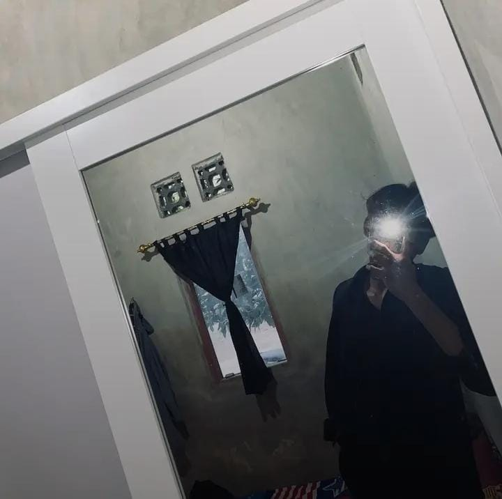

HTML90%
Struktur web semantik
Mahasiswa Teknik Informatika di Universitas Qamarul Huda Badaruddin (UNIQHBA) Bagu yang memiliki ketertarikan pada teknologi, pemrograman, pengembangan website, dan dunia digital.

Ardi Maulana merupakan mahasiswa Program Studi Teknik Informatika di Universitas Qamarul Huda Badaruddin (UNIQHBA) Bagu. Berdomisili di Praya Tengah, Lombok Tengah, dan memiliki ketertarikan pada bidang teknologi informasi, pemrograman, pengembangan website, serta pengembangan aplikasi.
{ "name": "Ardi Maulana", "focus": "Information Technology", "location": "Lombok Tengah, NTB", "curiosity": [ "Web Development", "Programming", "Digital Technology" ] }
Persentase di bawah adalah contoh/placeholder yang mudah diubah dan tidak menyatakan tingkat kemampuan sebenarnya.
Contoh project berikut adalah placeholder yang dapat diganti dengan karya sebenarnya.
Landing page personal dengan fokus pada identitas, karya, dan pengalaman digital.
Konsep dashboard untuk menampilkan data akademik secara terstruktur.
Konsep aplikasi pengelolaan data dengan alur create, read, update, dan delete.
Konsep website informatif dengan navigasi jelas dan tampilan responsive.
Konsep antarmuka untuk membantu pencatatan dan pengelolaan informasi.
Program Studi Teknik Informatika
Tambahkan riwayat pendidikan sebelumnya di sini.
Punya ide, pertanyaan, atau ingin berkolaborasi? Silakan gunakan informasi placeholder di bawah dan ganti dengan data kontak yang sebenarnya.